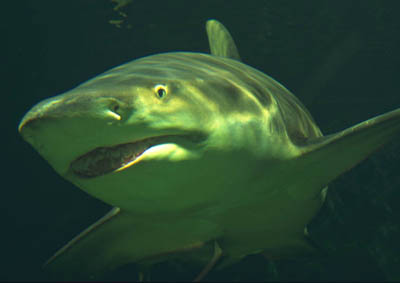
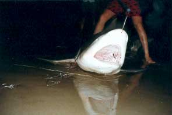

weekend was trampolining sessions. i have been doing another job on the
side - car mechanic, but i am not very good at it. me and tim have been
trying to fix my car unsuccessfully which has taken up the last two
weekends. i have given up and am just going to pay someone else to do it
cos i have to spend 4 hours a day on the train instead of 1 in the car
which sucks a lot.
seb's given up his site cos he never rides anymore. the trails are
drying out so we might get to ride them before they have to be
knocked.
- Monday, February 23, 2004
Lemon Shark Update

Here is a lemon shark. It looks like it has jaundice
but it is in fact meant to be yellow. Some people think these sharks
are not dangerous but they are wrong. They can do bad biting and
once they have got you they tend not to let you go again. So watch
out.
This lemon shark is swimming along.
